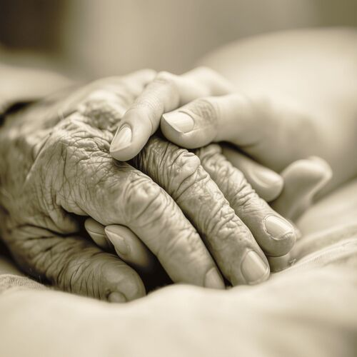
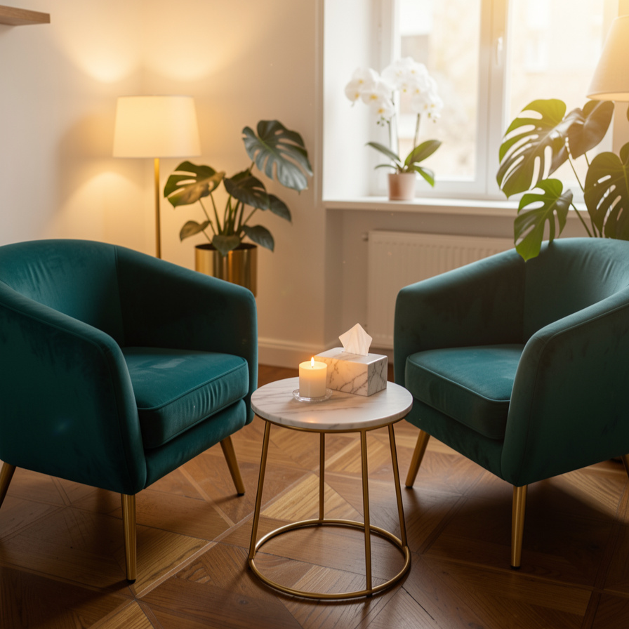
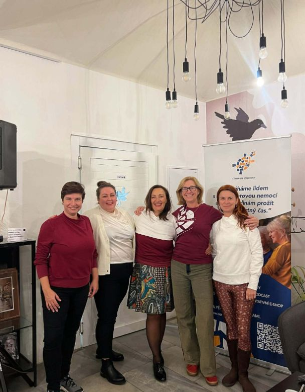
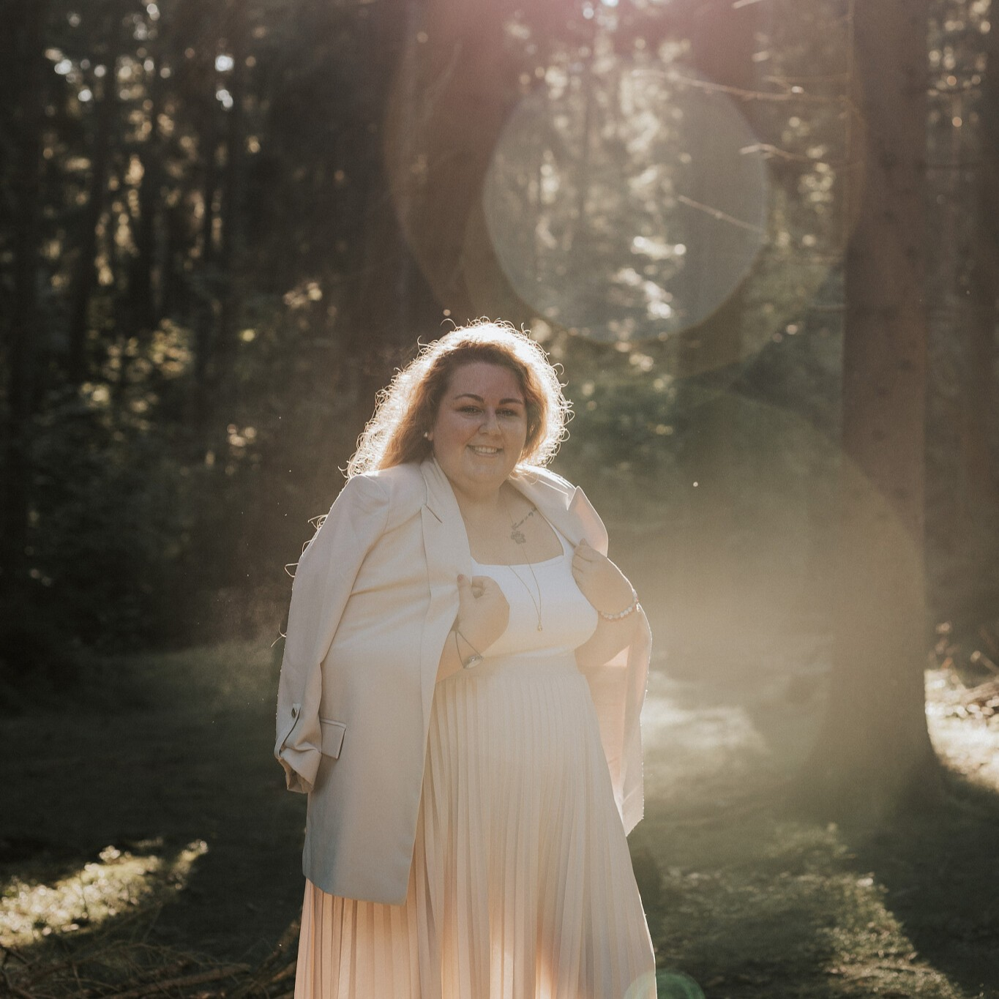

Nejste na to sami
V náročném období péče vás provedu krok za krokem. Pomohu vám ulevit od nejistoty a spoustu věcí za vás i osobně zařídím.
Marie Bezděkovská | Péče v závěru života | Access Bars
Provedu vás celým procesem péče prakticky, profesionálně a zároveň s laskavostí a lidsky. Budu vedle vás kráčet od diagnózy tak dlouho, jak budete potřebovat.

Přeji si, aby každá rodina, která čelí péči o blízkého ať už z důvodu vyššího věku nebo nezvratné diagnózy, měla možnost touto cestou projít jako rodina. Ne jako odborník, který se musí naučit orientovat v systému, znát všechny předpisy, možnosti, pravidla a být ve stresu, zda to zvládne.
S čím vám mohu pomociRodiny, které ke mně přicházejí, jsou často zahlcené, ve strachu a plné otázek.
Nejčastěji řeší:
Za každým příběhem je strach. Strach z toho, zda to jako jednotlivec nebo rodina zvládnou. Zda neudělají něco špatně.
Já k tomu ale ráda říkám – z lásky k druhému děláme vždy to, co považujeme za správné. Tím pádem tady nic jako chyba neexistuje.
Ozvěte se miV náročném období péče vás provedu krok za krokem. Pomohu vám ulevit od nejistoty a spoustu věcí za vás i osobně zařídím.
Neřešíme jen „co dělat", ale i „jak to zvládnout". Pomáhám vám v péči o blízkého i v péči o sebe.
Každá rodina je jiná. Má jiné možnosti, hodnoty i potřeby. Společně hledáme řešení, které bude fungovat právě vám.
Můžete se mnou mluvit o strachu, únavě, bezmoci i o otázkách, které se těžko vyslovují. Bez obav z posuzování. Bez tlaku.
Doprovázím vás i v období truchlení, kdy se učíte žít dál a hledat nový smysl.
Vycházím ze své praxe v Česku i zahraničí. A také z vlastní zkušenosti – pečovala jsem o svého dědečka.

Je pro vás diagnóza blízkého nová? Pomáhám vám se zorientovat, nastavit funkční plán péče a zvládnout vše – od komunikace s lékaři po psychickou podporu.
Zjistit více
Nabízím bezpečný a laskavý prostor, kde můžete být přesně tam, kde jste. Pomáhám se naučit vzpomínat tak, aby vás to neparalyzovalo.
Zjistit více
Podporuji vaše zaměstnance v péči o klienty v závěru života. Formou školení, workshopů a pravidelné podpory týmu – vždy na míru vaší organizaci.
Zjistit více
Jemná terapie pracující s 32 body na hlavě. Přináší hluboké uvolnění, klid mysli a lehkost. Vhodná pro pečující, pozůstalé i každého, kdo potřebuje zpomalit.
Zjistit víceAno, právě toto je ideální chvíle, kdy se poznat. Můžeme se tak společně zaměřit na další kroky a připravit na budoucnost.
Jsem průvodkyně. Provázím procesem péče jak nemocné, tak i pečující osoby, provázím pozůstalé. Často rodinám říkám, ať mě představí tak, jak uznají za vhodné, aby byla naděje, že to rodina (nemocný) přijme lépe.
Je v pořádku vědět, že pro nás něco nefunguje a hledáme jiné možnosti. Můžete využít individuální sezení se mnou a zkusit, zda vám má práce bude vyhovovat.
Access Bars je jemná relaxační metoda, která skrze jemný dotek pracuje na úrovni celého těla a mysli. Přivede nás k relaxaci a díky tomu i ke změně spousty věcí. S metodou pracuji u pacientů, kteří jsou v léčbě, před i po ní – nevylučuje se s lékařskou péčí, ani do ní nijak nezasahuje.
Ztráta blízkého člověka je vždy zásadní situace v našem životě. Je třeba si uvědomit, že ačkoliv život jde dál, proces truchlení může být opravdu dlouhý a žádný rádce či chytrá kniha nemá formulku, kterou by šlo tento proces zkrátit. Pracuji s klienty v jakékoliv fázi truchlení a jsou vždy vítáni a opečováváni.

Mým přáním je vytvořit bezpečné a laskavé místo pro ty, kteří pečují, procházejí nemocí nebo se vyrovnávají se ztrátou. Každou z těchto rolí jsem sama zažila, a proto vím, jak velkou zátěž dokáže přinést.
Léta praxe v sociální péči mě naučila hodně. Ale teprve péče o dědečka s onkologickým onemocněním (navíc uprostřed doby covidové) mi ukázala, kudy chci dál jít.
Číst víceMaruška se o našeho tatínka starala naprosto skvěle. Pomohla nám zorientovat se v administrativě, které jsme vůbec nerozuměli, a byla nám velkou oporou i v samotné péči. Dokázala zaskočit ve chvílích, kdy jsme s dcerou musely být v práci, a vždy jsme věděly, že je o tatínka dobře postaráno. Původně jsme si přáli dochovat tatínka doma, ale postupně pro nás byla péče natolik náročná, že jsme se i díky otevřené komunikaci a podpoře Marušky rozhodli pro hospic. Bylo to těžké rozhodnutí, ale dnes víme, že bylo správné. Po celou dobu jsme měli dostatek informací, věděli jsme, co se děje, a nebyli jsme na to sami. Maruška s námi byla až do poslední chvíle. Tatínek si ji velmi oblíbil – stejně jako my.
Po naší konzultaci mám najednou pocit, že všechnu zvládnu. Celou dobu mě paralyzoval strach z toho, že něco neudělám tak, jak by si máma přála, nebo že udělám něco špatně. Marie mě připravila na různé možnosti, pomohla mi vytvořit konkrétní plán a věděl jsem, co všechno budu potřebovat. Velkou úlevou pro mě je i to, že mám možnost se na ni kdykoliv obrátit – telefonicky nebo osobně. Je skvělé vědět, že na to nejsem sám a máma může být doma.
Několik let pečuji o svou maminku. Dělám to ráda, ale jsem unavená. Rodina si zvykla, že všechno zvládám, a já už nemám moc prostoru zažít něco nového nebo si opravdu odpočinout. Setkání s Maruškou mi domluvila vnučka, která říkala, že si ho užijeme. A měla pravdu. I když mě ze začátku trochu děsilo, co se bude dít, odcházela jsem odpočatá, uvolněná a bylo mi dobře jako už dlouho ne. Dnes se vídáme každý měsíc a na každé setkání se moc těším.
Možná je toho teď moc. Možná nevíte, co přesně potřebujete. Možná jen cítíte,
že už na to nechcete být sami. To stačí.
Popište mi krátce vaši situaci a přidejte telefon.
Ozvu se vám co nejdříve. Pokud raději voláte – zavolejte rovnou.
Možná telefon nezvednu, jsem často u klientů, ale zavolám nazpět.
Domluvíme se, zda se potkáme v poradně, nebo přijedu za vámi domů.